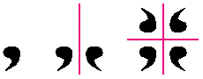
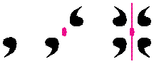

Symmetry is more interesting than you might think. At first glance there doesn't seem
to be much to it, but if you look a little closer you'll find that symmetry runs swift and
cold and deep through many human pursuits. Symmetry concepts are found at the heart
of topics ranging from the passionately artistic to the coolly scientific, and from the
trivial to the fundamental.
I learned a lot about symmetry while trying to learn how to create tile shapes. I've
always been intrigued and tantalized by M. C. Escher's periodic drawings, the ones that
use lizards or birds or fish or little people as jigsaw puzzle pieces, interlocking and
repeating forever in a systematic way to completely tile a surface (mathematicians
call thistessellation of a plane). My own halting attempts to draw tessellations have
met with only tepid success. Especially hard is creating tiles that are recognizably
something other than meaningless abstract shapes.
To accomplish this feat of tiling a plane, you have to apply a set of constraints to
everything you draw. Every line serves multiple purposes. In one of Escher's prints,
for example, the same line that forms the left arm of one lizard also forms the tail of
an adjacent lizard. That line is also repeated ad infinitum across the plane;every
lizard's left arm and tail is defined by that same line shape. Now think about drawing a
line like that. Not only are you drawing two shapes with one line (which is difficult
enough), but you're also drawing innumerable identical lines simultaneously. They
sort of spin out from the point of your pencil in a dazzling dancing tracery of lines.
Trying to hold all that complexity and interrelatedness in your head is very, very
difficult.
Being a basically lazy person with too much time on my hands, I decided to write a
program that would handle it all for me. I envisioned a direct manipulation kind of
thing: as I changed a line, all the other corresponding lines in the pattern would change
simultaneously. I figured it would be easy to draw little people and leaves and fishes
that perfectly interlocked, if only I didn't have to keep all those interdependencies and
constraints in mind and could just draw. Also, I thought maybe that by interactively
"doodling" and being able to watch the whole pattern change on the fly, I could get some
sort of gut feeling for the constraints.
All this was way back in 1990. To learn more, I bought a book calledHandbook of
Regular Patterns: An Introduction to Symmetry in Two Dimensions by Peter S.
Stevens. The book is a sort of systematic catalog of hundreds of regular patterns,
including many of Escher's, and also has a great introduction to the mathematics of
symmetry (which turns out to figure heavily in this tiling business). Unfortunately,
after an intense but superficial examination and an evening or two playing with pencil
and paper and little dime store pocket mirrors (bought in a frenzy of excitement the
day after I bought the book), I decided that the program would beway too hard to write
to make it worth it, and shelved the whole thing.
Well, last month I finally picked up the idea again. QuickDraw GX was getting close to
being released, and it had features that made it relatively easy to implement what I
wanted: very flexible transformation and patterning capabilities, and excellent hit
testing, which makes implementing direct manipulation of lines a snap. So I dusted off
Stevens's book and my little mirrors and got to work, trying to figure out the
constraints on the tiles and implement the program.
Here's a basic fact about tiling a plane that I still find thoroughly remarkable three
years after I first learned about it: there are only 17 possible arrangements of tiles.
"But wait!" I hear you cry in your many-throated voice, "How can that be? Surely
there are a very large number -- nay, an infinite number -- of possible tile
shapes?"
Well, yes, that's true. But the way they fit together, the underlying structure, will
always be one of only 17 possibilities. This applies toany two-dimensional pattern
made up of regularly repeating motifs, not just seamless tilings. The motif that's
repeated, of course, can be anything: a leaf, a loop, or a lizard; a frog, a flower, or a
fig -- it makes no difference. There are still only 17 ways to build a regularly
repeating 2-D pattern. This was proved conclusively in 1935 by a mathematician
named von Franz Steiger. (Yes, that's his name; I checked twice.)
To see why, you need to learn a little about the fundamental symmetry operations and
how they combine with one another to breed other symmetry operations. I'll gloss over
most of the details (see Stevens's book, or any introductory text on crystallography,
for more info), but the gist of it is that when you sit down and begin to repeat some
motif by repeatedly applying fundamental symmetry operations -- like reflection and
rotation -- you find an interesting thing: combining symmetry operations with one
another often causes other types of symmetry to sort of spring into existence. And the
operations always seem to gather themselves into the same few groups.
Figure 1 shows a very simple example. We start with a simple motif (a comma shape)
and repeat it by applying a transformation to it, in this case by reflecting it across a
vertical line. Then we reflect the whole thing again, this time across a line
perpendicular to the first one. The resulting pattern of four commas possesses mirror
symmetry in two directions, meaning that a reflection of theentire pattern across
either one of the lines leaves the pattern unchanged. But if you study it, you'll find
another symmetry embedded in the pattern that we didn't explicitly specify. In
particular, it showsrotational symmetry: rotating the pattern 180º about its center
leaves it unchanged, too.

Figure 1 Building a Simple Symmetry Group
Figure 2 shows an alternative way to create the same pattern. This time we begin with
the rotation (the point of rotation, orrotocenter , is shown by an oval). If we then run
a mirror line through the rotocenter, we produce exactly the same structure, the
samesymmetry group , as we did by combining two perpendicular reflections above.
These three symmetry operations (two perpendicular reflections and a 180º rotation)
come as a set. Combining any two automatically produces a pattern that also contains
the third. This is where the constraints on the structure of regular 2-D patterns
appear. No matter how you combine and recombine the fundamental operations to cover
a plane, you find yourself generating the same 17 arrangements, the same 17 groups
of operations.

Figure 2 Another Way to Build the Group
By the way, this example group isn't one of the 17 plane groups. It's one of the
10point groups, groups whose constituent transformations operate around a single
point. In case you're curious, there are also 7 line groups (ways to repeat motifs
endlessly along a line) and 230space groups (ways to repeat a solid shape to fill
three-dimensional space). I don't know if anyone has figured out the groups of
higher-dimensional spaces. Knowing mathematicians, I don't doubt it.
So what about that computer program I was going to write? As this column goes to
press, it's undergoing its second major overhaul, having suffered mightily from my
"write it first,then design it" philosophy. So far I have 5 of the 17 groups
implemented, and it's pretty cool. There's no telling how far I'll actually get before my
deadline arrives, but I'll put the results, however clunky and raw they may be, on this
issue's CD so that you can check it out.
I've learned a couple of things already: Even with the constraints automatically
handled by the computer, it's still really hard to create representational shapes that
will tile a plane, though creating abstract tile shapes is suddenly a piece of cake. Also,
I still haven't gotten the kind of gut-level understanding of thestructure of the
patterns that I was hoping for (though just watching them change as I doodle is very
entertaining).
I've also learned along the way that symmetry concepts go far deeper than the simple
plane groups I'm messing with. The rules of symmetry and of form are, in a sense,
manifestations of the structure of space itself. It's an odd thought that spacehas a
structure, isn't it? Normally we think of space as a sort of continuous nothingness, as
anabsence of structure or as a formless container for structure. But space itselfdoes
have a structure, and every single material thing must conform to that structure in
order to exist.
Physicists, of course, have been trying very hard for a long time to describe
precisely the nature of space. Einstein thought that there was really nothing in the
worldexcept curved, empty space. Bend it this way, and you get gravity, tie it in a
tight enough knot and you get a particle of matter, rattle it the right way and you get
electromagnetic waves.
And there are other symmetries, symmetries even more fundamental. Einstein's
theory of special relativity broke some of the central symmetries in physics, and thus
called attention to therole of symmetry in science. Shortly afterward a mathematician
named Emmy Noether established a remarkable fact: each symmetry principle in
physics implies a physical conservation law. For instance, the familiar conservation
of energy law is implied by symmetry in time -- energy is conservedbecause time is
symmetric. (Of course, I'm greatly oversimplifying here. The symmetry of time is one
that Einstein tarred and feathered and ran out of town on a rail. He showed that under
extreme conditions time isnot symmetric, and energyisn't conserved. Reassuringly,
he replaced these broken and bloodied false symmetries with fresh new ones, but
they're well beyond the scope of this column and my poor addled brain.) The point is
that symmetries seem to be part of the very fabric of the universe; they seem to be the
warp and weft of existence itself.
Yes, it's heady stuff indeed, this symmetry business. I'm staying plenty busy just
trying to understand the symmetries possible in a plane, thank you very much, so I'll
leave worries about the symmetry of space-time or of K-meson decay to the pros. Once
again, I find that by looking just beneath the surface of a seemingly innocuous topic, I
find depth and complexity beyond measure. Ain't life grand?
DAVE JOHNSON once thought that maybe computers contained the secret of life, but
has since decided that no, it can't be found there, either. He's now beginning to look
elsewhere. Compost piles (preferably hot, steaming, and active) are currently being
eagerly investigated.*
Thanks to Jeff Barbose, Michael Greenspon, Bill Guschwan, Mark Harlan, Bo3b
Johnson, Lisa Jongewaard, and Ned van Alstyne (aka Ned Kelly) for reviewing this
column. *
Dave welcomes feedback on his musings. He can be reached at JOHNSON.DK on
AppleLink, dkj@apple.com on the Internet, or 75300,715 on CompuServe.*